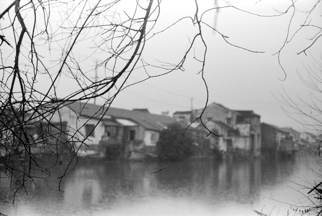

如果我能飞翔，我想掠过那条河流，飘向远方。
那里是我的童年时光。记忆虽然有些模糊，但时常会象碎片一样突然在脑中闪现。
哦，我还记得在铁路大桥旁边的那棵槐花树，每年开花季节，一树的槐花洁白无瑕，如梦似幻，小时候的我们可是爬树能手，虽然槐花树很高，但我们不一会儿就能爬上高处，坐在树干上，顺手采些槐花往嘴里塞，花香带着丝丝甜意让人沉醉。
还有一望无际的田野，绿油油的庄稼显出盎然生机，乡间小路夹杂在田地间，那是我们上学的路。背着帆布书包走在乡间的小路上，轻快的脚步和着微风与虫鸣，虽然那时的经济条件无法跟现在比，大家还都穿着带补丁的衣裤，但童年的快乐却一点也没有少。
我还记得那片山坳上的桑果林，当桑果成熟时，孩子们就会在下午去上课的路上拐过去采桑果，啊！那桑果又黑又紫，汁甜爽口，往往是吃饱了还把口袋全装满，直到听见远处传来的上课铃声才恋恋不舍地匆忙离开，赶到学校，箭一般跑向教室的我们嘴上仍残留着桑果的一抹紫黑。
那时候我的班主任语文老师对我特别好，经常带东西给我吃，还经常邀请我去她家里玩，虽然我们是部队的孩子，但也经常会去村里找同学小伙伴一起玩。所以我从小就有在农村生活的经历，长大后有时途经乡村时，都会有种亲切的感觉。另外，我小时候有个绰号叫“故事大王”，每逢下午的语文课上完后，语文老师都会叫我走上讲台去给同学们讲故事，我也乐此不疲。现在回想起来，我仍然惊讶于自己小时候竟有如此才能，而反观长大后现在的我，似乎倒变得不善言语了。
童年时光让我无法忘怀的，还有冬天在河面上溜冰，在田地里挖地瓜吃，在小溪中捉鱼和螃蟹，晚上出去抓甲壳虫给家里养的鸡吃...。
而现在，岁月悄然流逝，童年时代一去不返，我时常感叹造化弄人，童年时看过的吃过的感受过的，很多都已经永远消失不返。只剩下梦幻般的回忆，时常在心间闪亮，那是属于我的童年，属于我们记忆中的时代。
所以，我时常梦见自己能飞翔起来，掠过荆棘，越过山川河流，去向我梦中的远方。
图片
